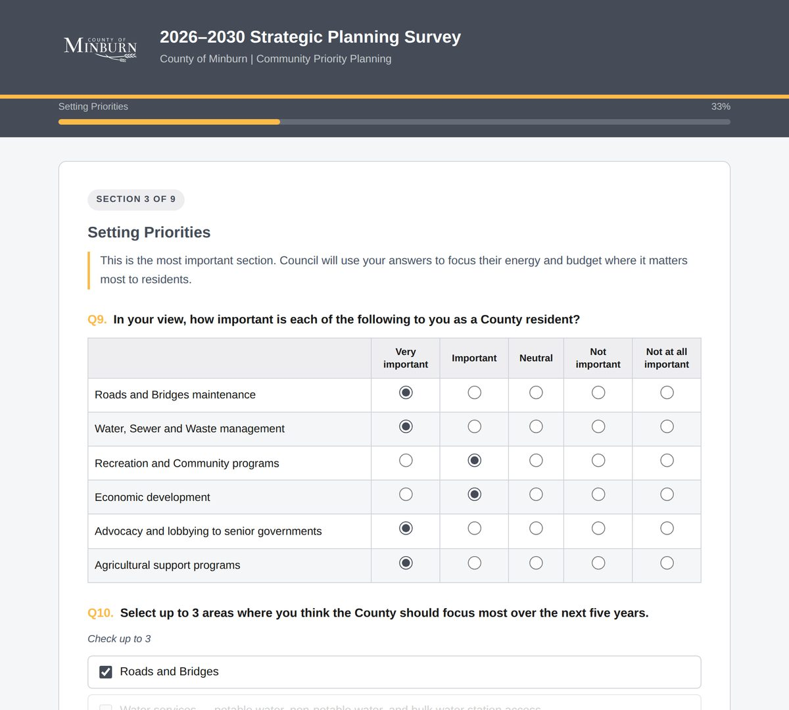

Built on your municipality's own web address, on Canadian servers, security-assessed and privacy-reviewed in writing before they open — and delivered back to Council as a written report, not a spreadsheet.
Survey tools are good at collecting answers. What they do not do is take responsibility for the four things a municipality is actually on the hook for.
Before a municipal survey opens, the environment it runs on is reviewed against a written checklist across four layers. Every finding is recorded, the fixes in our control are applied, and anything left outstanding is named and assigned — so the municipality has a document, not an assurance.
Collecting personal information from Alberta residents carries specific duties. We work through each of them before the survey is built, and hand the municipality a written compliance package covering all ten.
| Requirement | What it means in practice | What we build |
|---|---|---|
| Consent | A resident has to be told what is being collected and why, and has to actively agree, before submitting. | A plain-language notice above the submit button. If it is not ticked, the survey does not send. |
| Stated purpose | Information may only be used for the purpose it was collected for. | One purpose, written into the notice. No secondary use, no sharing, no repurposing later. |
| Data minimisation | Only collect what the purpose actually requires. | Every field has to justify itself at design time, and sensitive questions carry a “prefer not to say” option. |
| Safeguards | Protection proportionate to how sensitive the information is. | The security assessment and hardening pass described above, documented in writing. |
| Retention limits | Keep it only as long as the purpose requires, then destroy it. | A defined retention period, disclosed to the resident before they answer. |
| Access controls | Only authorised municipal staff should be able to read responses. | A password-protected staff portal; the response file is unreadable from the public web. |
| Accountability | A named individual must be accountable for the collection. | A real Privacy Officer, named in the notice with a working contact link. |
| Right of access | Residents can ask what was collected, correct it, or have it deleted. | A named contact on the survey, and the internal process for answering agreed with you before it opens. |
| Data residency | Where the information physically lives matters. | Canadian infrastructure. No third-party analytics, advertising pixels or external scripts. |
| Breach readiness | A documented procedure for detecting, containing and reporting an incident. | Flagged in writing as a municipal responsibility, with what it has to cover set out — never left silently unowned. |
A written retention policy and a breach-notification procedure are administrative documents, not software. No vendor can adopt them on your behalf. We tell you so in writing and set out what each has to cover, because the failure we see most often is not a municipality deciding to skip them — it is a municipality never being told they were required.
A rural Alberta county needed to hear from residents twice: once on policing priorities feeding its RCMP Community Priority Planning process and annual contract discussions, and once on the County's 2026–2030 Strategic Plan. Both ran on the County's own web address. The hosting was assessed and privacy-reviewed in writing before the first survey opened, and the same hardened configuration carried the second.

Spencer Morley Consulting builds public resident surveys for municipalities across Canada. The survey is purpose-built rather than rented from a survey platform: it runs on the municipality's own web address, on Canadian infrastructure, and the engagement includes the security assessment, the privacy review, the analysis and the written report.
Responses are stored on Canadian infrastructure and stay in Canada. The survey page carries no third-party analytics, advertising pixels or external scripts, so nothing about a resident's visit is reported to a third party.
Yes. Collecting personal information from Alberta residents carries duties under the Protection of Privacy Act, including a clear consent notice, a stated purpose, a named accountable person, a defined retention period and a way for a resident to ask what was collected. A default survey template has none of these, and the obligation still applies. We work through the requirements before the survey is built.
A What We Heard report is the written record of a public consultation, prepared for Council and for the public. It states the methodology, tabulates the closed questions, groups the open-text comments into themes, and carries a verbatim appendix of the open responses so residents can see their input was not filtered out.
No. Whoever manages the municipality's domain adds one DNS record, which is the same kind of change made for any new subdomain. Everything after that is handled by Spencer Morley Consulting, and there is no software licence to procure and nothing to renew after the consultation closes.
The municipality does. The full response export is provided as a plain spreadsheet with a data dictionary so the coded values stay readable, alongside the analysis, the What We Heard report, the verbatim appendix and the written security and privacy assessment.
No pitch deck. We will walk through what you are trying to find out, whether a survey is even the right instrument for it, and what it would take to run one properly before your next planning cycle.
Or email jordan@spencermorleyconsulting.ca directly. We reply within one business day.